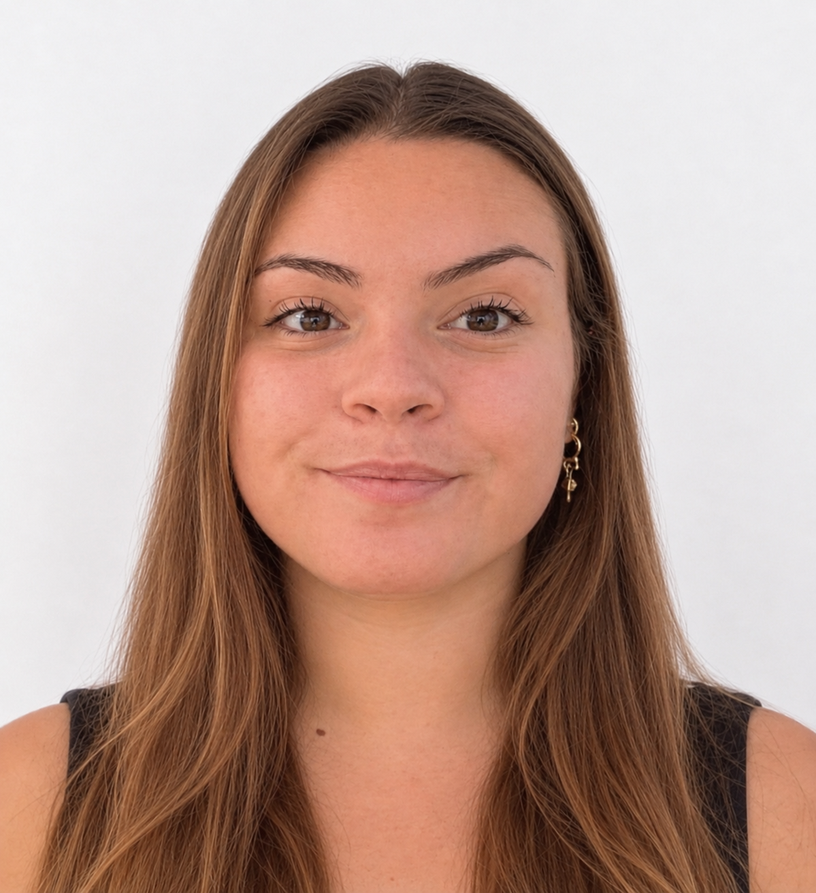
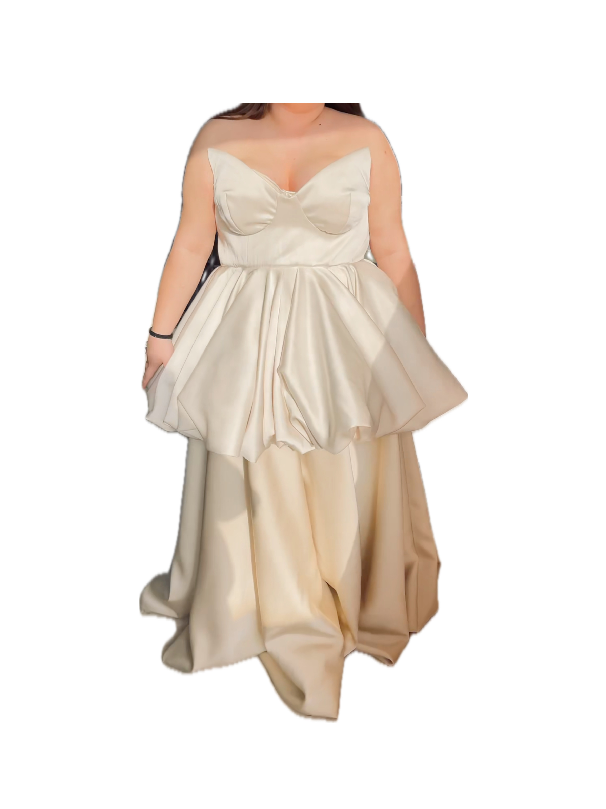
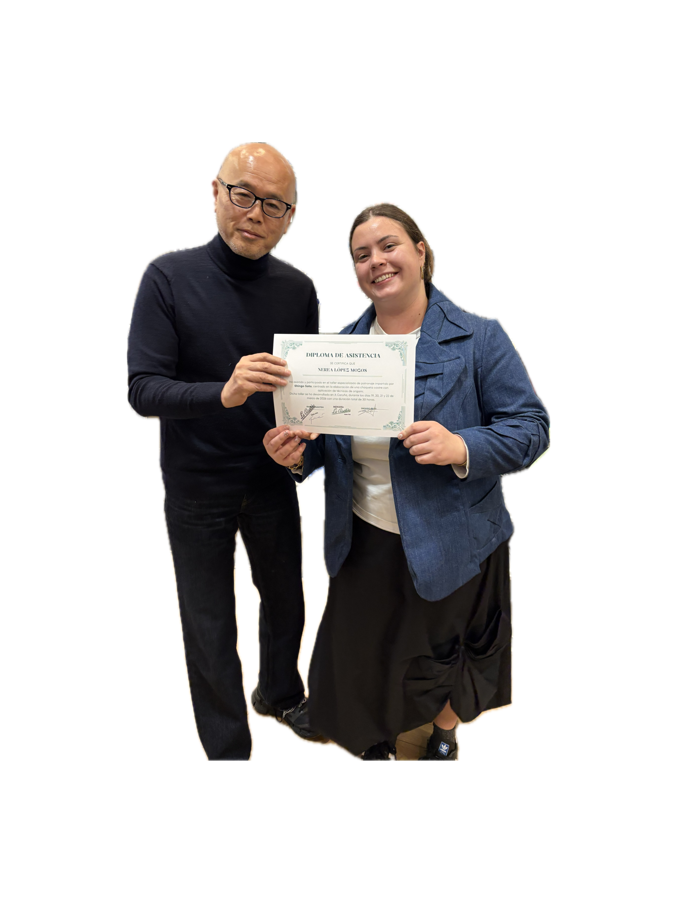
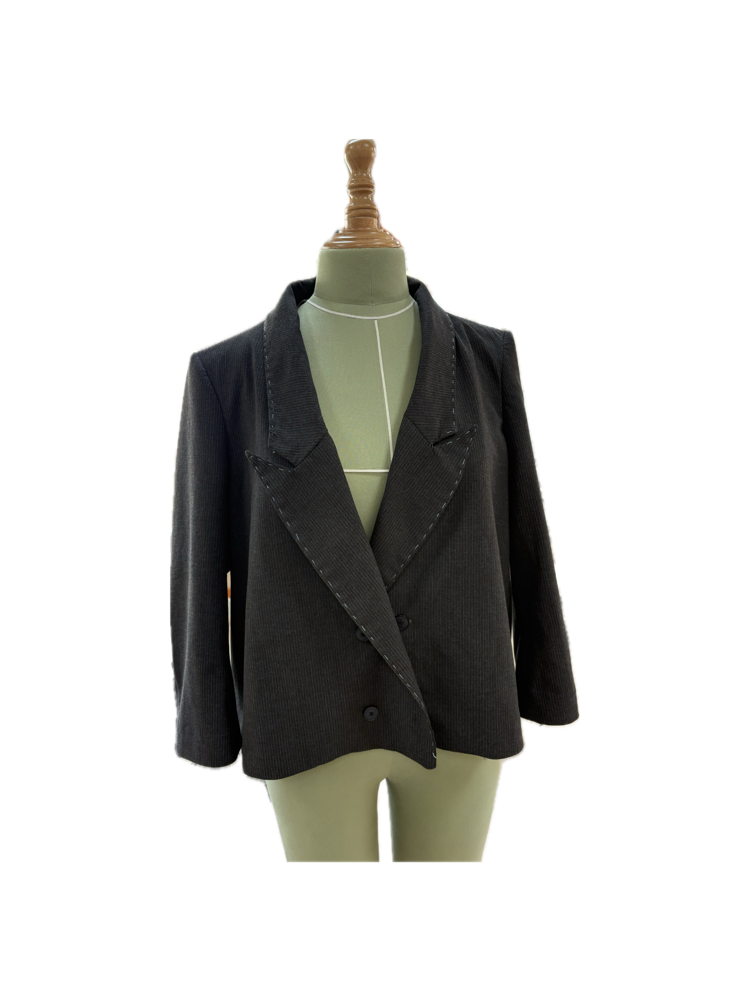
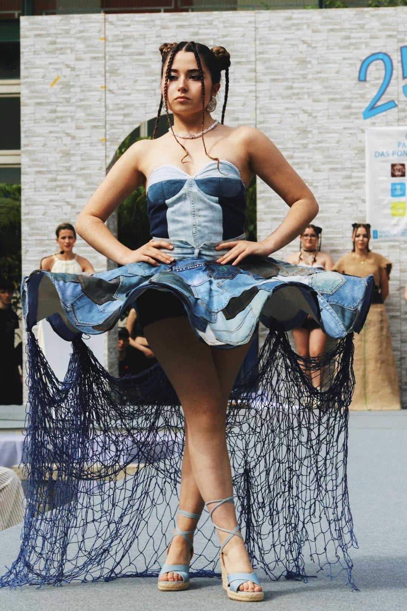
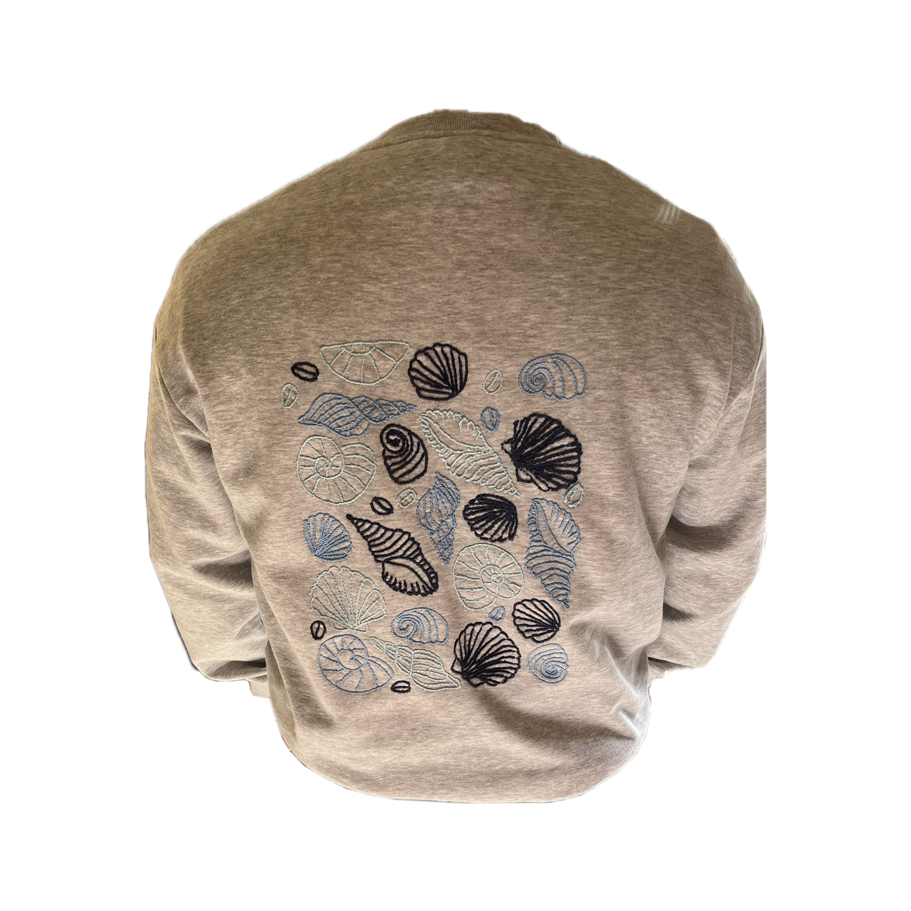
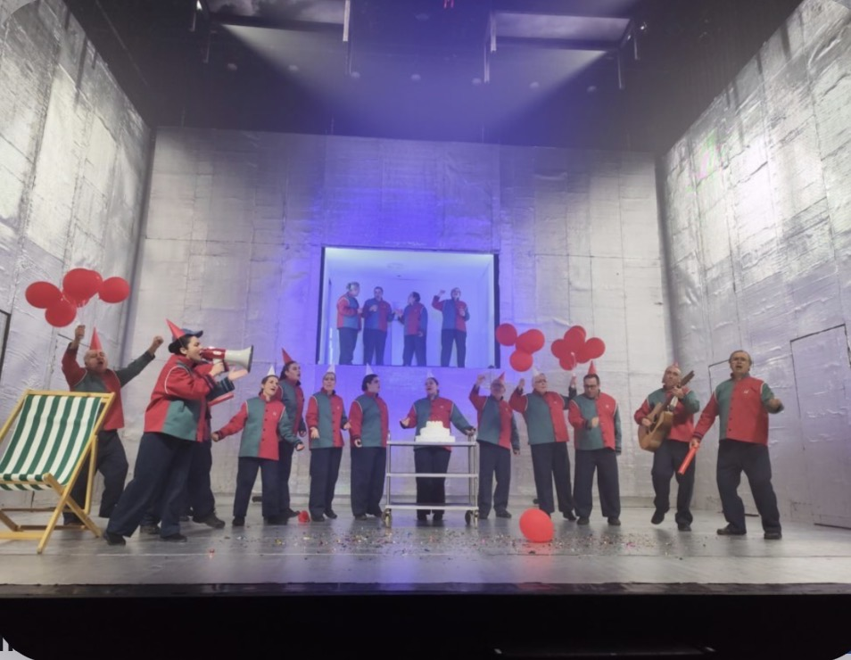

Especializada en confección y patronaje a medida, ayudando a personas a encontrarse a través de la moda. Creo en una moda que respeta la individualidad, donde el diseño y la comodidad van de la mano y las prendas se adaptan a los cuerpos, nunca al revés.


Desarrollo de habilidades en el trabajo con grandes cantidades de tejido, perfeccionando la precisión y el cuidado en los acabados. Adaptación de técnicas de patronaje y confección a cuerpos fuera de los estándares normativos, profundizando en la importancia del ajuste personalizado.

Curso con Shingo Sato. Realización de una chaqueta sastre aplicando la técnica Origami, basada en la transformación del patrón mediante pliegues estratégicos. Exploración de formas alternativas de construcción y manipulación del tejido.

Diseño, patronaje y confección de una chaqueta sastre a medida, con cuello caído y botonadura lateral. Trabajo enfocado en la adaptación del patrón y la construcción de una prenda de sastrería personalizada mediante maquinaria industrial y remates a mano.

Desfile escolar con reciclaje de tejidos

Realización de encargos y prendas a medida

Vestuario teatral - A fábrica de fume
Además de mi trabajo en taller, he colaborado con el Centro de Arte Dramático de Galicia (A fábrica de fume) en la realización de vestuario teatral. Mi disciplina y precisión también se nutren de mi formación en el Conservatorio de Música (Tercero de profesional en Violín).
Precisión y atención al detalle • Sensibilidad estética • Resolución de problemas • Autonomía e iniciativa • Capacidad de organización • Trabajo en equipo • Inglés (A2) e Italiano (A1)
CIFP Manuel Antonio (FCT en Musac Unique Concept Wear)
CIFP Paseo Das Pontes
Guillermo Bordoy